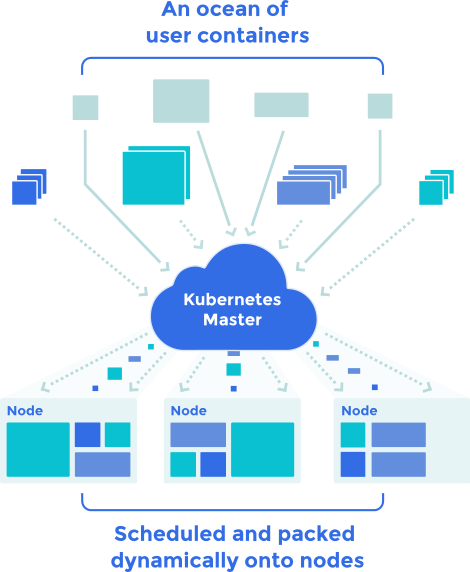
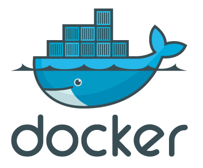
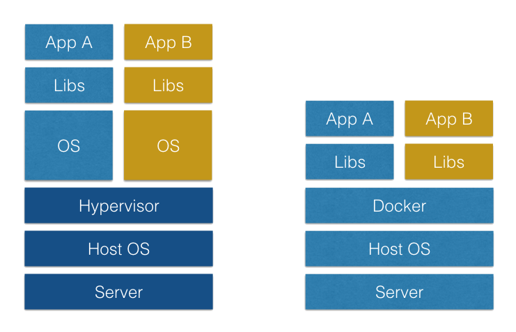
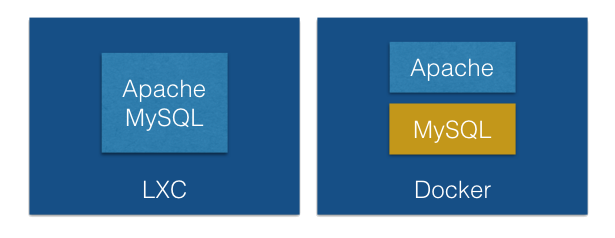
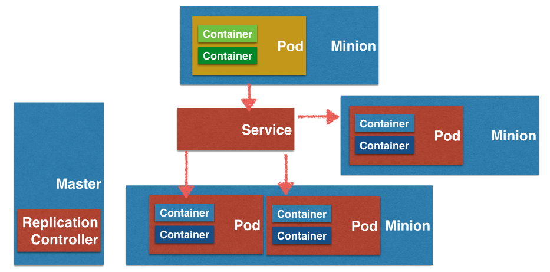
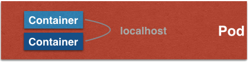
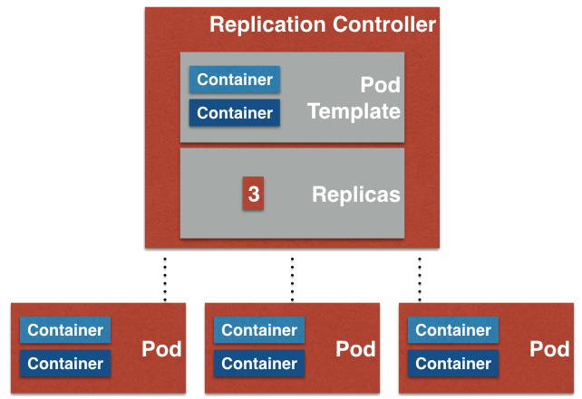
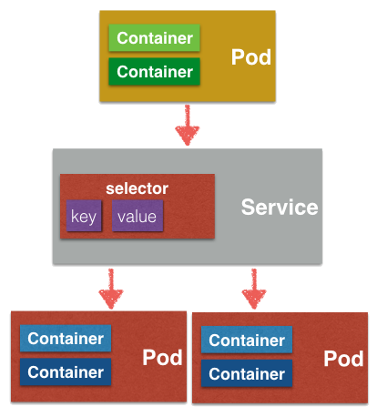
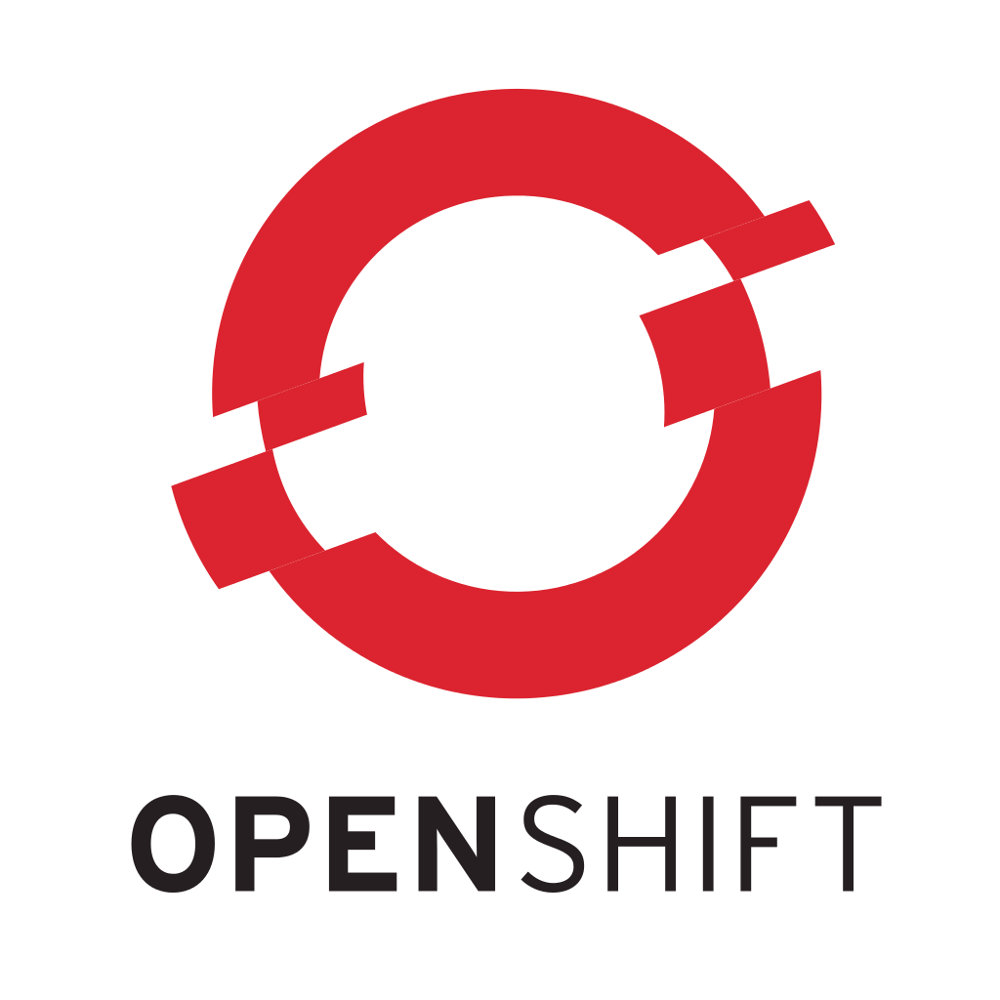
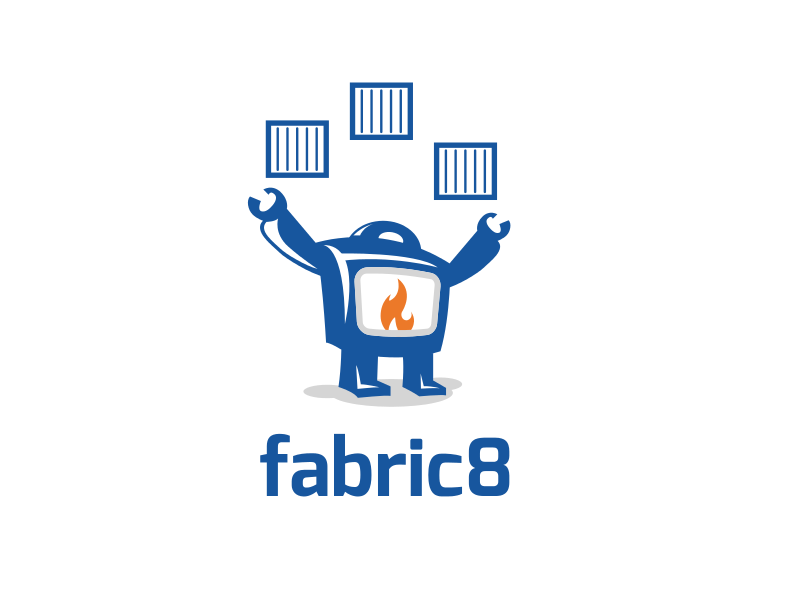

Kubernetes
for Java Developers
by Ioannis Canellos / @iocanel
about me...
principal software engineer at Red Hat
member at the Apache Software Foundation
agenda
what is Kubernetes?
what problem does it solve?
dive into Kubernetes
developers tools
questions & answers
so, what is kubernetes?
an orchestration system
for containerized apps...
an containerized what?
an application packaged with its operation environment
an alternative to virtualization
...with lower footprint
...and added coolness
what does it do?
- schedule containers to multiple nodes
- manage container lifecycle
- provide a transparent way discovering and using services
what problem does it try to solve?
modern enterprise software
- steering away from the monolith app
- distrbuted components and services
new challenges
- discovery of services
- testing complexity
- delivery complexity
common problems
- it works on my machine
what do we need?
- a consistent experience accross all environments
docker
what is docker?
a deamon
- package your application
- ship your application
docker example
this presentation
FROM scratch
COPY bin/servehttp /usr/local/bin/servehttp
COPY slides /usr/local/share/slides
EXPOSE 8080
CMD ["/usr/local/bin/servehttp", "/usr/local/share/slides"]
docker build -t iocanel/fosscomm2015 .
docker run -p 8080:8080 iocanel/fosscomm2015
docker vs vm
docker vs lxc
what to remember
- tiny footprint
- extremely fast
kubernetes
an overview
pod
A group of containers
share host
share volumes
replication controller
service
volumes
container fs is ephemeral
persistent storage
secrets
volumes for storing "sensitive" info
- credentials
- ssh keys
openshift
A PaaS that combines docker, kubernetes and more...
fabric8
devops and integration platform for Kubernetes and OpenShift
awesome tooling
client
json and yml are nice...
a java dsl is even nicer !!!
json format
{
"kind": "Service",
"apiVersion": "v1",
"metadata": {
"name": "myservice"
},
"spec": { "ports": [ {
"protocol": "TCP",
"port": 80,
"targetPort": 8080,
} ],
"selector": {
"key": "value1",
},
"portalIP": "172.30.234.134",
"type": "ClusterIP",
}
java dsl
client.services().createNew()
.withNewMetadata()
.withName("myservice")
.and()
.withNewSpec()
.addNewPort()
.withProtocol("TCP")
.withPort(80)
.withNewTargetPort(8080)
.and()
.addToSelector("key1", "value1")
.withPortalIP("172.30.234.134")
.withType("ClusterIP")
.and()
.done(); maven plugin
generates json
interacts with kubernetes
fosscomm/awesome-image
8080
fosscomm-service
value1
value2
cdi integration
- "Hybrid"
- client injection
- services injection
service injection
@Inject
@ServiceName("mysqldb")
private String mysqlUrl;
how cool would it be...
To not only inject the service coords...
...but also the clients?
client injection
@Inject
@ServiceName("mysqldb")
private Connection mysqlConnection;
@Factory
@ServiceName
public Connection create(@ServiceName @Protocol("jdbc:mysql") String url) {
Class.forName("com.mysql.jdbc.Driver");
return DriverManager.getConnection(serivceUrl + "/" + DB);
}
@Factory = Pass through @Produces
springboot integration
- share annotations with CDI
- easy migration from cdi to springboot and vice versa
Testing
What do we need to test?
- Code
- Images
- Configuration
How do we need to test it?
We need to test everything as whole

You can't afford not to test exactly what you ship
arquillian
Fabric8 Arquillian Extension
- creates a session
- deploys application
- waits for ready state
- run the test suite
- cleans up
What is a Session?
- The interaction with Kubernetes
- Shares lifecycle with the test Suite
- Has a unique Kubernetes Namespace
- What happens in session stays in session
Dependency Discovery
- Using the classpath
- Using the pom.xml
- Explicitly specified as a URL (works with mvn URLs too)
mvn:my.groupId/my-artifact/1.0/json/kubernetes
Arquillian Resources Example
@RunWith(Arquillian.class)
public class SuperCoolTest {
@ArquillianResource
KubernetesClient client;
@ArquillianResource
static Session session;
@Test
public void testStuff() {
//test stuff
}
}
Arquillian Resources Example
@RunWith(Arquillian.class)
public class OtherSuperCoolTest {
@Pod("mysql-pod")
@ArquillianResource
Pod pod;
@ReplicationControllerName("mysql-controller")
@ArquillianResource
ReplicationController replicationController;
@ServiceName("mysql")
@ArquillianResource
Service service;
@Test
public void testOtherStuff() {
//test other stuff
}
}
Assertion Examples
@Test
public void superTest() {
assertThat(client)
.replicationController("super-controller", session.getNamespace())
.isNotNull();
assertThat(client).pods()
.runningStatus()
.filterNamespace(session.getNamespace())
.haveAtLeast(3, (Condition)(podSchema) ->{return true});
}